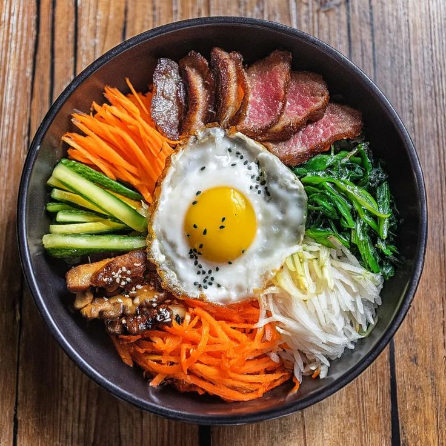
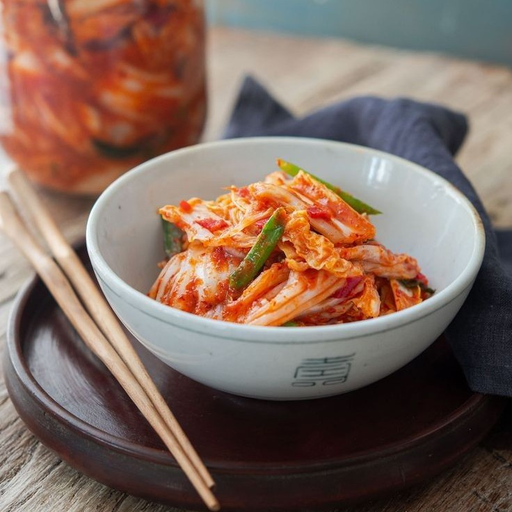
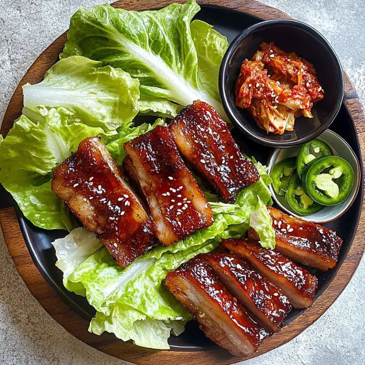

Bibimbap

Se trata de un plato de arroz, verduras, carne y huevo con unos aliños y una salsa tremendamente sabrosos. Es adictivo. El secreto está en los detalles y su increíble salsa ligeramente picante.

Se trata de un plato de arroz, verduras, carne y huevo con unos aliños y una salsa tremendamente sabrosos. Es adictivo. El secreto está en los detalles y su increíble salsa ligeramente picante.

Es un plato versátil y se puede disfrutar solo, como acompañamiento o como ingrediente en otros platos, como guisos, sopas o frituras. Es un alimento integral en la cultura y la dieta coreana, y su popularidad se ha extendido a nivel mundial.

Es un plato coreano muy popular que consiste en tiras de panceta de cerdo sin curar, generalmente cortadas en trozos rectangulares delgados. El término «samgyeopsal» se traduce literalmente como «tres capas de carne», refiriéndose a las capas de carne y grasa que componen este corte de cerdo.